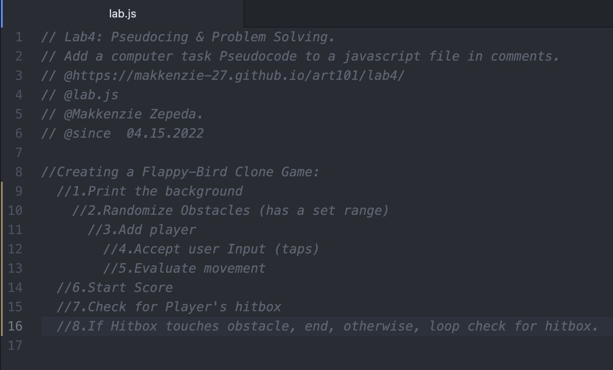
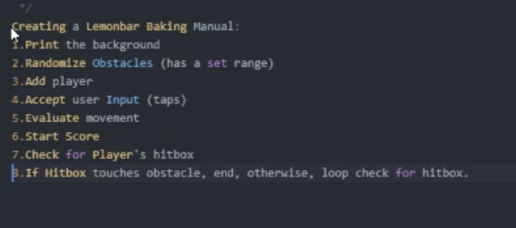
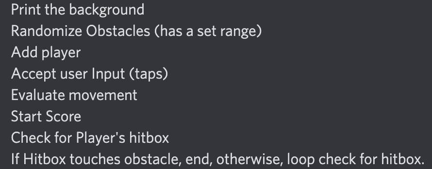
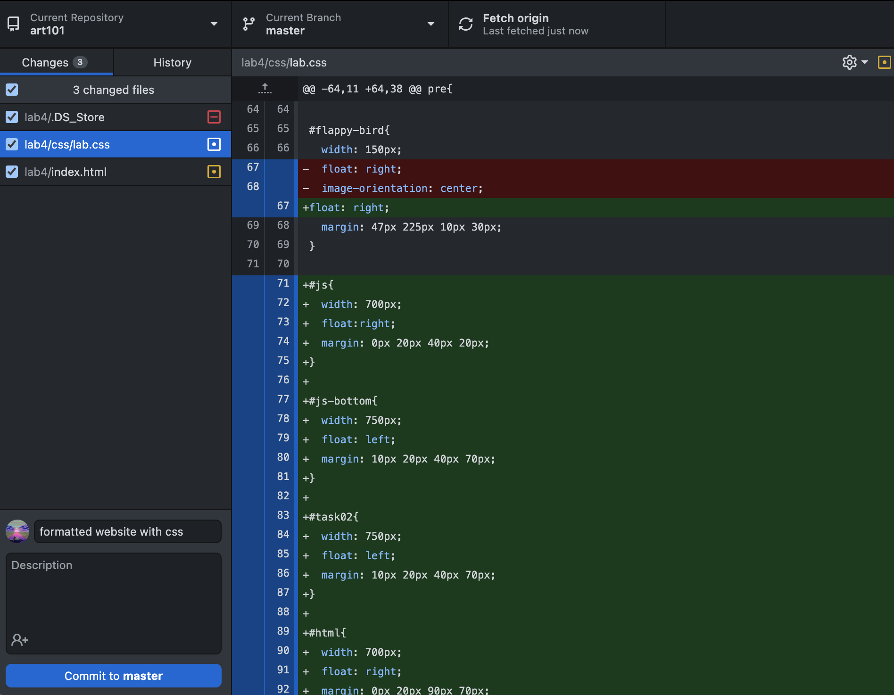
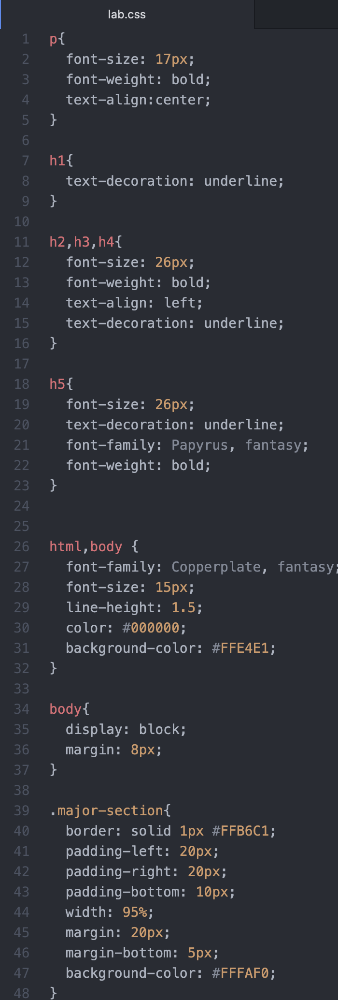
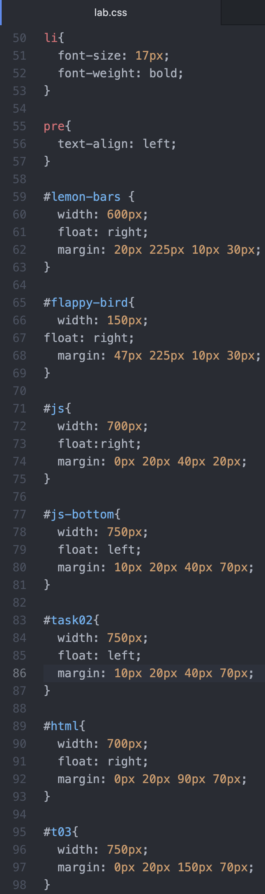
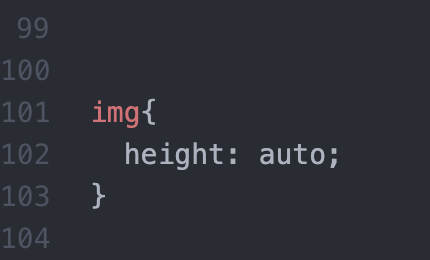
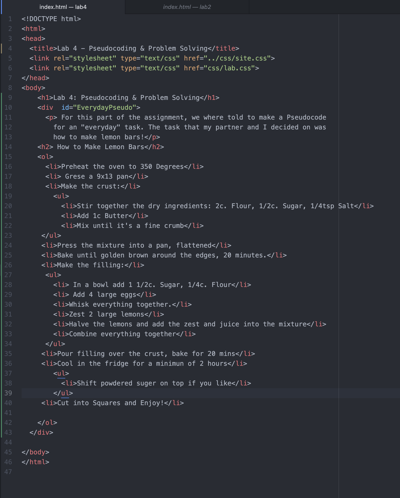
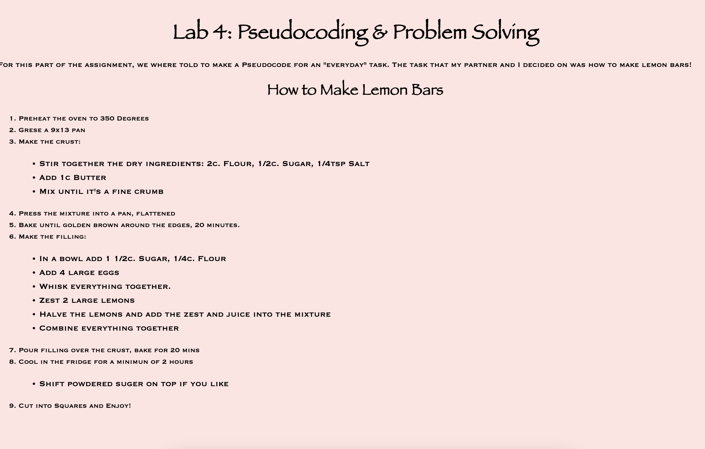

For this part of the assignment, we where told to get in the habit of thinking in terms of Pseudocoding before jumping into coding. We had to descide on an "everyday task" and a task we would want to do on an electronic. With these tasks we had to practice breaking them down into high-level tasks and sub-steps to see how we could breakdwon complicated ideas. The task that my partner and I decided on for task 1 was how to make lemon bars! For task 2 we chose to breakdown the game, Flappy-Bird.
//Creating a Flappy-Bird Clone Game:
//1.Print the background
//2.Randomize Obstacles (has a set range)
//3.Add player
//4.Accept user Input (taps)
//5.Evaluate movement
//6.Start Score
//7.Check for Player's hitbox
//8.If Hitbox touches obstacle, end, otherwise, loop check for hitbox.
Some challenges I faced was understanding what counted as simple high level guidelines for creating task 2. I understood the examples given, but it seemed like there were sub sections with the highlevel tasks. It was a challenge deciding on what what simple enough vs being too detailed. Another challenge faced was getting the images aligned in the correct locations. Along with getting my Task 4 pre code aligned to the left.
There were no serious problems. My partner was very helpful and taught me what she knew how to do. Together we got through every task well. We had a small moment where my lab css got deleted and we had to spend some time fidning it.
We were both able to breakdown our tasks to simple needs and sub-steps. For task 2 we did some research to figure out exactly what would be necessary for a game like Flappy Bird to work and were able to pin point out our high level tasks. I was also able to find my lab css file in the trash and get all my code back. I did not delete the file so was confused on why it ended up on my desktop and then my trash. But my partner helped me find it and we were back in business.
Below are my screenshots for tasks 01 - 04. The top two images are of the js code before being commented out and after being commented out. Below the left js screenshot is an image of the high level tasks we created for task 02. I then included screenshots of my up to date lab.css code for lab 04; read left to right and then the last portion is below the two css screenshots. Below the right js screenshot you will find a screenshot of my github desktop before pushing the changes into github. Below that is a screenshot of my HTML code. At the very bottom you will find two screenshots of a before and after of my website page to show the changes made during the process.
         Click here to return to the homepage!